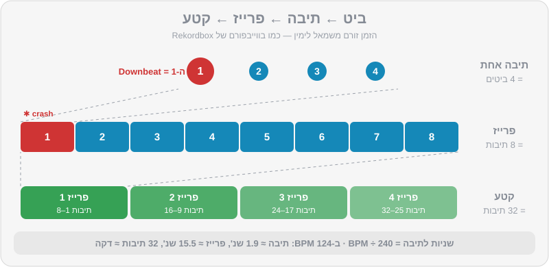
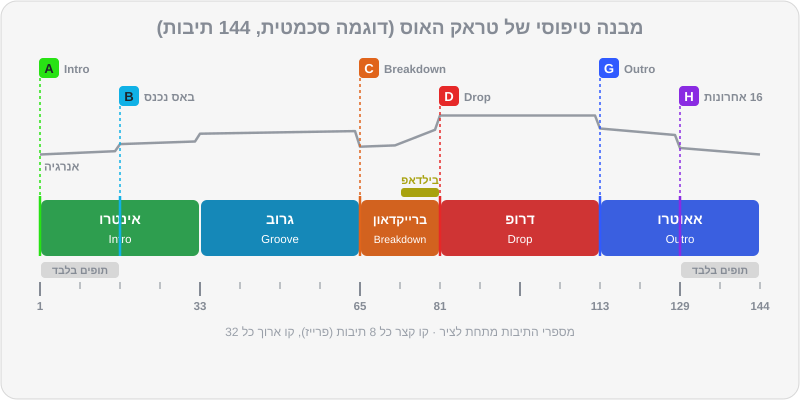

פרק 03 מתוך 20
מבנה מוזיקלי: ביט, תיבה ופרייז
Music Structure: Beats, Bars & Phrases
השפה הסודית של DJs: איך מוזיקה לריקודים בנויה בבלוקים של 8, 16 ו-32 תיבות, מה זה אינטרו, ברייקדאון, בילדאפ, דרופ ואאוטרו — ואיך לספור באוזן כדי שכל מעבר ייפול בדיוק במקום.
שמתם לב פעם שבמסיבה טובה כל הרחבה "יודעת" מתי הדרופ מגיע? אנשים מרימים ידיים שנייה לפני, מישהו צועק, והבאס נוחת בדיוק כשציפו לו. זה לא קסם — זה מבנה. מוזיקה לריקודים בנויה כמו לגו: בלוקים קבועים של 8, 16 ו-32 תיבות. ברגע שתלמדו לשמוע את הבלוקים האלה, תדעו תמיד איפה אתם נמצאים בשיר, מה עומד לקרות, ומתי בדיוק להכניס את השיר הבא. זה הפרק הכי חשוב בחלק הראשון של המדריך — יותר אפילו מביטמאצ'ינג.
מה תלמדו בפרק#
- מה זה ביט (Beat), תיבה (Bar) ופרייז (Phrase), ואיך הם בנויים אחד על השני
- כמה זמן נמשכים 8, 16 ו-32 תיבות בקצבים שונים
- הקטעים של טראק אלקטרוני: אינטרו, גרוב, ברייקדאון, בילדאפ, דרופ, אאוטרו
- איך נראה טראק של DJ Lab מבפנים, ואיך לקרוא את קובץ ה-JSON שלו
- איך בנויים שירי מיינסטרים, היפ-הופ ומוזיקה ים-תיכונית — ולמה הם מסובכים יותר
- שיטת ספירה שעובדת, ואיך מוצאים את ה-"1" גם מאמצע שיר
- למה מעבר שמתחיל באמצע פרייז נשמע "לא נכון", ואיך מחשבים נקודת כניסה
ביט, תיבה, פרייז#
ביט (Beat)#
הדופק של השיר — מה שהרגל שלכם רוקעת עליו. בהאוס, טכנו ורוב המוזיקה האלקטרונית, יש מכת בס-דראם (Kick) על כל ביט. לזה קוראים Four-on-the-floor ("ארבע על הרצפה"). מעל ה-Kick יש בדרך כלל:
- קלאפ או סנר על ביטים 2 ו-4,
- היי-האט פתוח בין הביטים (ה-"אנד" — Off-beat), זה ה"צ'ה" שגורם להאוס להרגיש שהוא קופץ.
תיבה (Bar)#
ארבעה ביטים יוצרים תיבה אחת (במשקל 4/4, שהוא המשקל של כמעט כל מוזיקת הריקודים). הביט הראשון בתיבה — ה-"1" או ה-Downbeat — הוא החזק ביותר. שם קורים השינויים.
פרייז (Phrase)#
קבוצה של תיבות שיוצרת "משפט" מוזיקלי. במוזיקה אלקטרונית הפרייז הבסיסי הוא 8 תיבות, ופרייזים מתחברים לבלוקים גדולים יותר של 16 ו-32 תיבות. כמעט כל שינוי משמעותי — כניסת באס, כניסת ווקאל, ברייקדאון, דרופ — קורה בתחילת בלוק כזה.

כמה זמן זה לוקח?#
הנוסחה שכדאי לזכור: שניות לתיבה = 240 ÷ BPM. (60 שניות לדקה, כפול 4 ביטים בתיבה.)
| BPM | תיבה אחת | 8 תיבות | 16 תיבות | 32 תיבות |
|---|---|---|---|---|
| 95 (רגאטון / היפ-הופ) | 2.5 שנ' | 20.2 שנ' | 40.4 שנ' | 1:21 דק' |
| 100 (ים-תיכוני) | 2.4 שנ' | 19.2 שנ' | 38.4 שנ' | 1:17 דק' |
| 120 | 2.0 שנ' | 16.0 שנ' | 32.0 שנ' | 1:04 דק' |
| 124 (האוס) | 1.94 שנ' | 15.5 שנ' | 31.0 שנ' | 1:02 דק' |
| 128 (טק-האוס / ביג רום) | 1.88 שנ' | 15.0 שנ' | 30.0 שנ' | 1:00 דק' |
| 132 (טכנו) | 1.82 שנ' | 14.5 שנ' | 29.1 שנ' | 58 שנ' |
איך סופרים#
השיטה הקלאסית: סופרים את הביטים, אבל במקום להגיד "1" בכל תיבה, אומרים את מספר התיבה:
1-2-3-4, 2-2-3-4, 3-2-3-4, 4-2-3-4, 5-2-3-4, 6-2-3-4, 7-2-3-4, 8-2-3-4
וכך אחרי 8 תיבות יודעים שנגמר פרייז, ומתחילים שוב מ-1. כדי לא לאבד את הספירה של הבלוק הגדול, אפשר לסמן על האצבעות: כל פרייז של 8 — אצבע אחת. ארבע אצבעות = 32 תיבות.
איך לא לאבד את ה-1:
- תקשיבו לסימני פרייז. בסוף כמעט כל פרייז יש "סימן": מצילת קראש בתחילת הפרייז הבא, תיפוף קצר (Fill), רעש לבן שעולה, אלמנט שנכנס או נעלם.
- הזיזו את הגוף. נענוע ראש על כל ביט, רקיעה חזקה יותר על ה-1. הספירה עוברת לגוף מהר יותר ממה שנדמה.
- השתמשו בעיניים — אבל רק כעזר. בווייבפורם של Rekordbox רואים את הקווים של תחילת התיבות ושינויים בצבע ובגובה כשהבאס נכנס או יוצא. ה-Phrase analysis מוסיף מעל הווייבפורם פסים צבעוניים לפי קטעים. אבל המטרה היא לשמוע את זה, כי באמצע סט אין זמן לבהות במסך.
הקטעים של טראק אלקטרוני#
| קטע | מה קורה | אורך טיפוסי | למה זה חשוב ל-DJ |
|---|---|---|---|
| Intro — אינטרו | תופים בלבד או כמעט בלבד, אלמנטים נכנסים בהדרגה | 16–32 תיבות | המקום להכניס את השיר החדש מתחת לשיר הקודם |
| Groove / Verse — גרוב | הבאס נכנס, הגרוב המלא, לפעמים ווקאל | 16–32 | הלב של הטראק — כאן הרחבה רוקדת |
| Breakdown — ברייקדאון | הבס-דראם והבאס יוצאים, נשארים מלודיה, פדים, ווקאל | 8–32 | "נשימה". רגע רגשי, המתח עולה |
| Build-up — בילדאפ | תיפוף מתגבר, רעש עולה, פילטר נפתח | 4–16 | מבטיח לרחבה שמשהו גדול מגיע |
| Drop — דרופ | הכול חוזר במלוא העוצמה | 16–32 | שיא האנרגיה |
| Outro — אאוטרו | אלמנטים יוצאים בהדרגה, בסוף תופים בלבד | 16–32 | המקום לצאת מהשיר לטובת הבא |
לא לכל טראק יש את כל הקטעים, ולא תמיד באותו סדר. בטכנו היפנוטי, למשל, אין דרופ "קלאסי" — הטראק משתנה באיטיות, אלמנט נכנס ואלמנט יוצא כל 8 או 16 תיבות. במלודיק טכנו יש בדרך כלל ברייקדאון ארוך ודרמטי באמצע. בביג רום יש בילדאפ קצר וחזק ודרופ מתפוצץ.
איך נראה טראק של DJ Lab מבפנים#
כל הטראקים של DJ Lab בנויים לפי כללים קבועים שמתאימים ל-DJs:
- הביט הראשון בשנייה 0.0 — ה-1 הראשון הוא תחילת הקובץ.
- אינטרו של לפחות 16 תיבות (בדרך כלל 32) של תופים וכלי הקשה, בלי באס ובלי מלודיה ב-16 התיבות הראשונות.
- אאוטרו של לפחות 16 תיבות (בדרך כלל 32) שהוא תמונת מראה של האינטרו: הבאס יוצא, ובסוף נשארים רק תופים.
- כל גבול בין קטעים נופל על כפולה של 8 תיבות.
- סימן פרייז עדין (קראש או תיפוף) כל 8 או 16 תיבות.
כך נראה טראק טיפוסי בסגנון האוס / טק-האוס (הדוגמה סכמטית — לכל טראק החלוקה המדויקת שלו):

לקרוא את ה-JSON#
בקובץ ה-JSON של כל טראק יש שדה sections — רשימת הקטעים:
"sections": [
{"name": "Intro", "start_bar": 0, "bars": 32, "start_sec": 0.0, "energy": 4},
{"name": "Groove", "start_bar": 32, "bars": 32, "start_sec": 61.0, "energy": 6},
{"name": "Breakdown", "start_bar": 64, "bars": 16, "start_sec": 121.9, "energy": 5}
]
(זו דוגמה. את הערכים האמיתיים תמצאו בקובץ של כל טראק.)
שימו לב: ב-JSON הספירה מתחילה מ-0. "start_bar": 64 אומר שהברייקדאון מתחיל בתיבה 65 בספירה הרגילה. ולמה 121.9 שניות? כי ב-126 BPM כל תיבה היא 240÷126 = 1.905 שניות, ו-64 תיבות שלמות עברו לפני כן: 64 × 1.905 ≈ 121.9.
ומה עם מיינסטרים, היפ-הופ ומוזיקה ים-תיכונית?#
כאן החיים פחות מסודרים, וחשוב להכיר את זה כבר עכשיו, כי באירועים ישראליים תנגנו הרבה מזה.
פופ ודאנס-פופ#
מבנה של בית–פזמון (Verse–Chorus): אינטרו קצר, בית (8 או 16 תיבות), Pre-Chorus (לפעמים 4 תיבות!), פזמון, וחוזר חלילה. גרסאות הרדיו (Radio Edit) מתחילות כמעט מיד בשירה — אינטרו של 4 או 8 תיבות בלבד. לכן DJs מחפשים Extended Mix או גרסאות DJ עם אינטרו ואאוטרו ארוכים, או משתמשים בלופים (פרק 7).
היפ-הופ ו-R&B#
הפרייזים הם לרוב של 4 תיבות (שורה של ראפ = תיבה אחת, ארבע שורות = "בית קטן"). בית קלאסי בהיפ-הופ הוא 16 תיבות — מכאן הביטוי "16 Bars". הפזמון (Hook) בדרך כלל 8 תיבות. האינטרו קצר, ולפעמים מתחיל ישר בראפ. אין בס-דראם על כל ביט, ולכן "לשמוע את ה-1" דורש להקשיב ל-Kick החזק ולסנר על 2 ו-4.
רגאטון ואפרוביטס#
הקצב בנוי על דפוס חוזר (בדמבו של הרגאטון: "בום — צ'יק — בום-צ'יק") שחוזר כל תיבה. פרייזים של 8 תיבות, קטעים קצרים, שינויים מהירים. כאן "ה-1" נשמע ב-Kick הראשון של הדפוס.
ים-תיכוני ומזרחית#
שלושה דברים מיוחדים:
- פתיחה חופשית (תקסים). הרבה שירים נפתחים בסולו של עוד, כינור או קול — בלי קצב קבוע. אי אפשר לעשות ביטמאצ'ינג לקטע כזה. או שמתחילים את השיר אחרי הפתיחה, או שעושים מעבר "קאט" ומשאירים את הפתיחה לרגע של "וואו" (פרק 6).
- הקלטות "חיות". מתופף או דרבוקאי אמיתי = קצב שזז מעט. ה-Beatgrid צריך ניתוח Dynamic, ו-Sync עלול לא לעבוד טוב (פרק 2, פרק 4).
- פרייזים של 8 תיבות, אבל עם מילוי של דרבוקה שמסמן מעבר — אוזן מאומנת שומעת אותו מרחוק.
בטראקים של DJ Lab בסגנונות האלה — היפ-הופ, רגאטון ואפרוביטס (למשל mainstream-05, mainstream-08, mainstream-11) — האינטרו והאאוטרו יכולים להיות קצרים יותר, 8–16 תיבות, כמו במוזיקה האמיתית, אבל הם תמיד מיושרים לפרייזים. בדקו בקובץ ה-JSON של כל טראק. זה מקום מצוין להתאמן על הסגנונות האלה בלי הכאב של הקלטות חיות.
למה זה חשוב: Phrase Mixing#
אם תכניסו שיר חדש בדיוק על ה-1 של פרייז בשיר הנוכחי, השינויים בשני השירים יקרו באותו רגע: כשבשיר הישן נכנס קראש, גם בחדש מתחיל פרייז. האוזן של הרחבה שומעת יצירה אחת שזורמת. אם תכניסו אותו 4 תיבות "מאוחר", השינויים ייפלו באמצע משפט של השיר השני — וגם אם התופים מסונכרנים בצורה מושלמת, המעבר ירגיש מבולבל. זו הסיבה שמתחילים רבים עושים Sync מושלם ועדיין נשמעים "לא נכון".
נקודת הכניסה הקלאסית#
הטראקים של DJ Lab בנויים כך שהשיטה הפשוטה ביותר עובדת מושלם:
- בשיר היוצא (A) מגיעים לתחילת האאוטרו — Hot Cue G.
- על ה-1 של אותה תיבה מתחילים את השיר הנכנס (B) מתחילתו — Hot Cue A.
- 32 תיבות האאוטרו של A חופפות ל-32 תיבות האינטרו של B. גבולות הפרייזים נופלים יחד.
- בבונוס: ברוב הטראקים, בדיוק באמצע (תיבה 17 של המעבר) הבאס של A יוצא והבאס של B נכנס. זה כמעט Bass Swap אוטומטי — נלמד לעשות אותו כמו שצריך בפרק 6.
נקודת כניסה מחושבת#
לפעמים רוצים שמשהו מסוים בשיר החדש — נניח הדרופ — ינחת ברגע מסוים בשיר הישן. החישוב:
תיבת ההתחלה של B (בתוך A) = התיבה ב-A שבה הדרופ צריך לנחות − (תיבת הדרופ ב-B − 1)
דוגמה: אתם רוצים שהדרופ של B, שנמצא בתיבה 65 של B, ינחת בדיוק כשהאאוטרו של A מתחיל בתיבה 113 של A. אז מתחילים את B כש-A נמצא בתיבה 113 − 64 = 49. כלומר: מתחילים את B על ה-1 של תיבה 49 ב-A, ונותנים לשניהם לרוץ יחד (עם הרבה עבודת EQ, פרק 5–6).
תרגילים#
סיכום#
- 4 ביטים = תיבה. 8 תיבות = פרייז. 16 ו-32 תיבות = קטעים. כמעט כל שינוי קורה על ה-1 של פרייז.
- הנוסחה: שניות לתיבה = 240 ÷ BPM. בהאוס, 32 תיבות ≈ דקה.
- טראק אלקטרוני: אינטרו → גרוב → ברייקדאון → בילדאפ → דרופ → אאוטרו. מיינסטרים, היפ-הופ ומזרחית בנויים אחרת, עם אינטרו קצר יותר.
- טראקים של DJ Lab: אינטרו ואאוטרו נקיים של 16–32 תיבות, גבולות על כפולות של 8, וה-JSON מפרט את כל הקטעים (ספירה מ-0).
- מעבר טוב מיישר פרייזים: Hot Cue G של השיר היוצא ↔ Hot Cue A של השיר הנכנס.
- ספרו בקול, הזיזו את הגוף, והשתמשו במסך רק כעזר.
בפרק הבא#
יודעים לספור? מעולה. עכשיו נגרום לשני שירים לרוץ באותה מהירות בדיוק — באוזניים, בלי Sync: BPM, Tempo Fader, Jog Wheel, ושיטת הביטמאצ'ינג צעד אחר צעד.